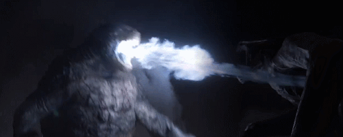
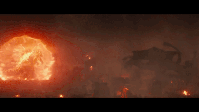
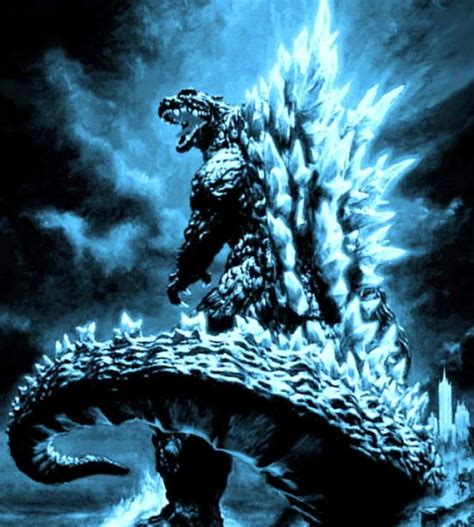

Poderes y habilidades
A través de los años, Godzilla ha poseído numerosos poderes y habilidades, por lo que es considerado como el Kaiju más poderoso, aunque a veces en las películas no aparecen todos los poderes de este personaje.
Aliento atómico
El ataque principal de Godzilla es su aliento atómico radiactivo. Las placas
dorsales de este comienzan a brillar, y luego se opacan a medida que libera un
poderoso rayo luminoso de energía nuclear por su boca. El color del rayo es
normalmente azul. Anteriormente se veía como un vaho o vapor incinerante por
las carencias de efectos especiales.
Godzilla parece poder controlar la intensidad de su ataque, desde una delicada
llama (década de 1950 y 1960) hasta un poderoso rayo con propiedades cinéticas
(década de 1970 en adelante).
En Godzilla tai Megaguirus: G Shōmetsu Sakusen el rayo poseía increíbles
capacidades incendiarias y un poder suficiente como para destruir un agujero
negro de pequeño tamaño; mientras que en Godzilla: Final Wars, poseía un increíble
rango de alcance y de precisión, dándole la capacidad de alcanzar un objetivo en
el espacio exterior y destruir casi cualquier Kaiju con un solo tiro. Durante una
memorable escena de Godzilla vs. Hedorah, Godzilla utilizó su rayo para "volar" de
espaldas propulsándose como un cohete, apuntándolo hacia el suelo.
Rayo Espiral
Esta versión del aliento atómico de Godzilla se presenta en la era heisei, en la película de "Godzilla vs King Ghidorah", la cual se representa una versión más poderosa que su aliento atómico normal y está envuelta en una espiral eléctrica. Este ataque es utilizado por Godzilla para decapitar la cabeza del medio del Rey Ghidorah después de que el aliento atómico normal no sé mostrará efectivo contra este.
Super Rayo Espiral De Uranio
Una variación de su rayo espiral durante la serie Heisei fue su "Súper rayo espiral de uranio", producto de haber absorbido la esencia de Rodan. El rayo fue tan poderoso que le permitió destruir por completo, con unos pocos disparos, a Mechagodzilla y a SpaceGodzilla.
Aliento atómico gravitacional
Godzilla demuestra una variación de su aliento atómico normal al final de la película de Godzilla: GMK cuando absorbe energía de los rayos de gravedad de Ghidorah en sus placas dorsales y la combina con su aliento atómico, produciendo un rayo azul aún más fuerte envuelto en espirales de un color amarillo eléctrico.
Rayo de calor ardiente
Visto en Godzilla vs Destoroyah, el aliento atómico de Godzilla es reemplazado por el "Rayo de Calor Ardiente" después de que este se convirtió en burning Godzilla tras absorber una gran cantidad de energía atómica de la explosión de Birth Island. Él usa este rayo para devastar Hong Kong y en la batalla con el Super X3. Una vez que Burning Godzilla comienza a entrar en su fusión nuclear comienza a usar el "Rayo de Calor Infinito" el cual se nos dice que aumenta infinitamente en poder cada vez que Burning Godzilla lo usa, y es capaz de hacer explotar a Destoroyah y herirlo gravemente mientras que toda el área a su alrededor arde en llamas.
Cortador de plasma
Visto en "Godzilla: Planeta de monstruos", Godzilla puede generar una poderosa onda de choque de plasma al mover su cola a velocidades supersónicas, dichas ondas de choque son extremadamente devastadoras, al poder destruir cualquier cosa a su paso en un rango de 600 metros.
Pulso nuclear

En adición a su mortal aliento atómico, Godzilla también puede emitir pulsaciones
atómicas en un rango bastante extenso, capaz incluso de paralizar y matar a un
enemigo que se encuentra cerca. Este poder fue visto por primera vez en su lucha
contra Biollante. Godzilla lo utilizó nuevamente en sus batallas contra
King Ghidorah en 1991 y contra Mothra en 1992.
En el MonsterVerse fue posible observar este ataque en Godzilla: King of the
Monsters durante su enfrentamiento final contra King Ghidorah. Tras recibir una
sobredosis de radiación por parte del Dr. Serisawa para salvarle la vida, el
cuerpo de Godzilla se vuelve inestable al punto que inevitablemente morirá en un
estallido nuclear, sin embargo desarrolla esta habilidad, gracias a Mothra, que
sacrifica su vida para protegerlo y le entrega su poder, dándole con él una forma
de purgar el exceso de radiación de su cuerpo, disparándolo contra su oponente
hasta desintegrarlo.
Poderes magnéticos
En la película, Godzilla vs. Mechagodzilla, Godzilla encontró una forma de generar poderosos rayos magnéticos desde su cuerpo luego de ser golpeado varias veces por rayos eléctricos. Tras ser gravemente herido por Mechagodzilla debió retirarse a la Isla de los Monstruos, donde recibió varios rayos de una poderosa tormenta que lo revitalizó. Este poder fue muy efectivo contra su enemigo mecánico ya que al lograr controlarlo pudo crear un campo magnético que atrapó al robot, le permitió decapitarlo y desactivarlo.
Burning Godzilla
Visto inicialmente en Godzilla vs. Destoroyah se explica que Godzilla absorbe los
grandes depósitos de uranio que se encontraban debajo de la Birth Island,
haciéndolo brillar de un rojo vivo, aparte de sobrecargarlo con energía atómica
y haciendo que se convirtiera en Burning Godzilla. En este estado, el estado
nuclear de Godzilla amenazaba con causar una fuerte exploción al punto de destruir
el planeta con él. Para evitar el daño Godzilla fue congelado temporalmente por
el Super X3, controlando con éxito la fisión de su corazón, pero este pronto
comenzó a sobrecalentarse, lo que ahora tomaría una catastrófica fusión nuclear
que también destruiría la Tierra. la "G-Force" formó una estrategia para atraer
a Godzilla a Tokio usando a Godzilla Junior que creio después de alimentarse de
la explosión de Birth Island. Después de que Godzilla llegó al aeropuerto de
Haneda y se reunió con su hijo, Destoroyah los atacó y mató a Junior. Godzilla
participó en su batalla final contra Destoroyah, finalmente derribandolo con la
ayuda del JSDF. Cuando Godzilla finalmente comenzó a derretirse, el JSDF usó sus
armas para congelarlo mientras se derretía, minimizando con éxito el daño. pero
aun así la radiación mortal emitida por el colapso de Godzilla fue un desastre,
pero posteriormente fue absorbida por el cuerpo sin vida de Junior, convirtiéndolo
en el próximo Godzilla.
En Godzilla: King of the Monsters, el doctor Serizawa se sacrifica detonando una ojiva nuclear que ayuda al monstruo a sanar y ganar poder para enfrentar a Ghidorah, sin embargo los niveles de radiación de Godzilla comenzaron a aumentar rápidamente lo que acabaría provocando una explosión termonuclear. Aun así el dragón lo supera en batalla por lo que Mothra, gravemente herida tras su combate contra Rodan, permite a Ghidorah matarla para transferir su poder a Godzilla, quien así incrementó aún más su fuerza pudiendo convertir el exceso de radiación en un aura calórica tan intensa como para fundir el metal a su alrededor y adquiriendo su cuerpo un color y aspecto similar a la versión de Tōhō, gracias a esto pudo desarrollar su ataque de pulso nuclear que le permitió salir victorioso.
Resistencia
Godzilla ha demostrado una increíble resistencia a través de los filmes.
Comenzando con su primera película, Godzilla mostró una completa inmunidad a las
armas tradicionales o cualquier cosa utilizada por el ejército en su contra.
Godzilla ha demostrado inclusive una resistencia al magma. Las únicas veces que
Godzilla ha presentado heridas abiertas ha sido en las batallas contra Gigan,
Biollante, Destoroyah y Mechagodzilla.
Godzilla posee una increíble capacidad de regeneración. Dicho poder fue el
argumento principal de las películas Godzilla tai Biollante y Godzilla 2000:
Millennium, en esta última se explicó que su poder se debe a que sus
características radioactivas le otorgaron el "Regenerador G-1" ("Organizer G-1"
en la versión japonesa), un tipo único de células que forman parte de su sistema
inmunológico y le otorgan no solo resistencia contra enfermedades y
envenenamientos, sino también la cualidad de cicatrizar y regenerar su cuerpo
de forma virtualmente instantánea.
Durante el operativo Final Wars Godzilla hizo gala de una fuerza abrumadora
al demostrar tener la energía para, literalmente, viajar por todo el planeta
enfrentando y derrotando a cada kaiju que existe, excepto Mothra, y aún tener
poder suficiente para frenar con su aliento el impacto del cometa que traía al
Monstruo X a la Tierra. Godzilla sólo conoció los límites de su fuerza
enfrentando al Monstruo X, quien resultó ser Keizer Ghidorah, el Kaiju más
poderoso que ha existido; sin embargo, antes de ser acabado, Shinichi Ozaki,
descendiente de los Kaiser Xillian, usó sus poderes para otorgarle energía
infinita, tras lo cual ni siquiera el monstruo alienígena fue un desafío
serio para Godzilla.
Habilidades físicas
Godzilla ha demostrado poseer increíbles niveles de fuerza física. Ha levantado
y lanzado monstruos que superan con creces su tamaño, (Tales como King Ghidorah,
Hedorah, Mechagodzilla, etc). Incluso en Final Wars, fue capaz de arrojar a
Kumonga más allá del horizonte. Godzilla también fue capaz de practicar artes
marciales de manera cómica durante la serie Shōwa, o moverse muy rápido, a pesar
de su tamaño, (tal como en Zone Fighter). En la serie Millenium ha sido capaz
de elevarse sobre el aire. En todas sus apariciones, ha demostrado que posee
unas poderosas mandíbulas, dientes y garras, a pesar de que su fortaleza varía
en cada una.
En Final Wars se vio que posee la resistencia física suficiente para pelear
contra todo el resto de kaijus que existen en la Tierra y derrotarlos con
facilidad a la vez que viajaba caminando o nadando por todo el planeta sin
detenerse.
Cola

La larga cola de Godzilla es también un arma formidable. Ha demostrado ser muy
flexible y poderosa, capaz de dar rápidos coletazos, derribar edificios e incluso
a otros kaiju. En King Kong vs. Godzilla y Godzilla tai Megalon, Godzilla ha
sido capaz de impulsarse con su cola desde una larga distancia para dar una
devastadora patada (de manera similar a la de un canguro). En Godzilla tai
Megaguirus: G Shōmetsu Sakusen se demostró que puede también ser prensil.
Fue capaz de golpear a Zilla (nombre con el que se conoce vulgarmente a su
contraparte estadounidense) cuando este estuvo a punto de caerle encima en
Godzilla: Final Wars.
En la adaptación americana de 2014, se ve que la cola de Godzilla es muy fuerte,
ya que con un solo golpe de esta pudo acabar con el MUTO macho al hacerlo chocar
violentamente contra un edificio.
En Shin Godzilla su cola era aún más larga que el propio Godzilla. Su cola era
capaz de lanzar un potente rayo atómico similar al de las placas dorsales y la
boca. En esta adaptación la cola se mantenía mayormente suspendida en el aire
así que no causaba muchos daños. La cola evolucionaba a la par de Godzilla, y
hasta le salieron dientes. Fue capaz de engendrar a las "crías" de Godzilla,
aunque estas no alcanzaron a dispersarse a causa del efecto del coagulante que
la Armada usó para paralizar a Godzilla.
A pesar de todo lo anterior, Godzilla siempre ha preferido luchar desde distancia,
con su aliento atómico, o arrojando objetos contundentes.
Características anfibias
A pesar de no ser un anfibio en estricto rigor, Godzilla posee un estilo de vida anfibia; ha pasado más de la mitad de su vida en el agua, y el resto en tierra firme, sólo para causar estragos o salvar el día. También es en el agua un poderoso guerrero, tanto como en tierra. Capaz de luchar en el fondo marino, o nadar moviendo su cola tal como un cocodrilo, Godzilla ha demostrado ser capaz de respirar bajo el agua (ocasionalmente, hibernando en el lecho submarino entre película y película). Aún sumergido, parece no tener restricciones con su aliento radioactivo, y usualmente conduce a sus enemigos bajo el agua en múltiples ocasiones, como en sus luchas contra Ghidorah, Ebirah, Battra, Biollante y Mothra.
Inteligencia
La inteligencia de Godzilla varía a través de su historia, aunque en algunas
historia se le muestra como un animal salvaje en muchas otras evidencia ser una
forma de vida pensante. Particularmente en la serie Showa presenta una
inteligencia similar a la humana, capaz de razonar y comunicarse con otros
monstruos llegando a enseñar a Minilla cómo lanzar su aliento atómico o incluso
ser capaz de recordar el pasado distante; en Godzilla vs Gigan es posible verlo
conversar con Anguirus y organizar un patrullaje de reconocimiento a Japón al
sospechar de posible actividad alienígena.
En Godzilla 2000: Millennium enfrentó a una entidad alienígena llamada Orga que
poseía la capacidad de asimilar atributos biológicos de otros seres y que se había
puesto como objetivo obtener el Regenerador G-1 de Godzilla; durante el combate
la impenetrable piel de Orga, sumado a los poderes regenerativos robados a
Godzilla, representaron un problema para el kaiju, pero éste demostró la habilidad
de crear estrategias al fingir debilidad y dejarse devorar para así disparar desde
dentro de su cuerpo de su enemigo y hacerlo explotar.
Junto su inteligencia parece poseer emociones muy cercanas a lo humano.
Generalmente, si no está combatiendo a un monstruo, muestra un odio y
resentimientos muy marcados contra la humanidad, paradójicamente jamás ha
permitido que Japón peligre frente a una amenaza que sobrepase la capacidad
de los humanos, mostrando preocupación y aprecio por la isla, lo cual podría
confirmar la hipótesis de que fuese la encarnación de las víctimas del holocausto
nuclear.
Radiación benigna
Según la versión de MonsterVerse el cuerpo de Godzilla, al igual que el resto de los titanes, emite constantemente un tipo de radiación que se impregna en los lugares por los que pasa. Esta radiación, lejos de ser nociva, es benéfica para el planeta ya que revitaliza la naturaleza y facilita el crecimiento de la vida. Tras su pelea contra los MUTOs, las ruinas de San Francisco en poco tiempo se transformaron en una zona verde y lo mismo sucedió con gran parte del mundo después que Ghidorah forzara el despertar de todos los titanes del mundo.